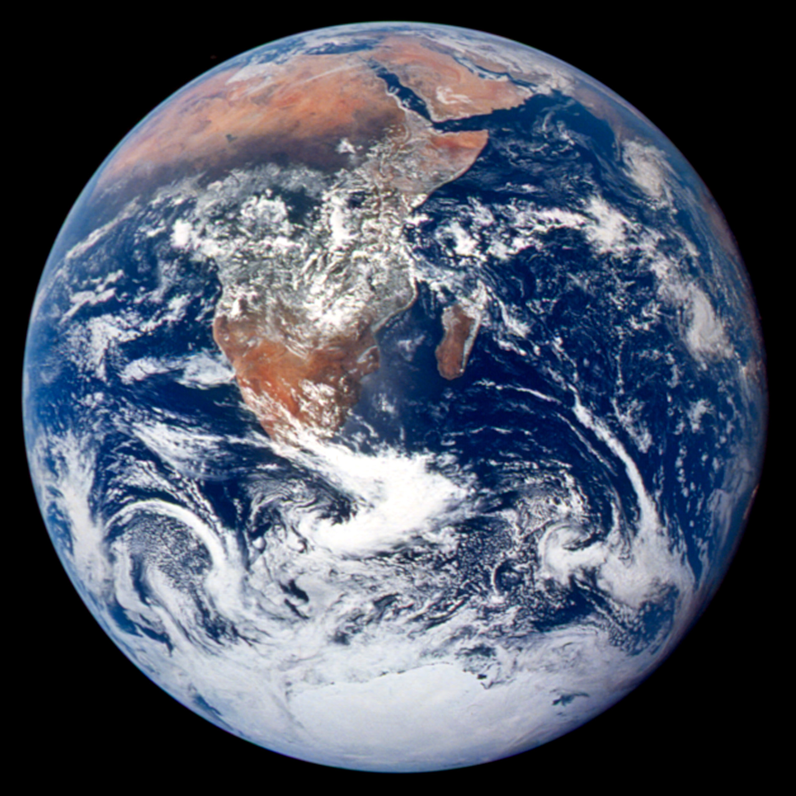

PDF view · Download four static slide images, or use Print for selectable text.
A browser presentation
The same slide format.
More room to explore.
Use ← → to move between slides
A photograph can carry
the visual story.
This image is saved with the deck,
so it is available offline.

Choose a tab to change the explanation.
Give the audience a clear reason to look, listen and think.
Bring in an image, a short example or something the audience can explore.
Let the interaction support the explanation, then move the story forward.
The PDF includes all three explanations.
Keep the live deck for presenting.
Save a PDF for sharing.
Move through the slides,
explore the tabs and go full screen.
Export four static pages,
with the image and explanations included.
Choose Export PDF in the toolbar to try it.